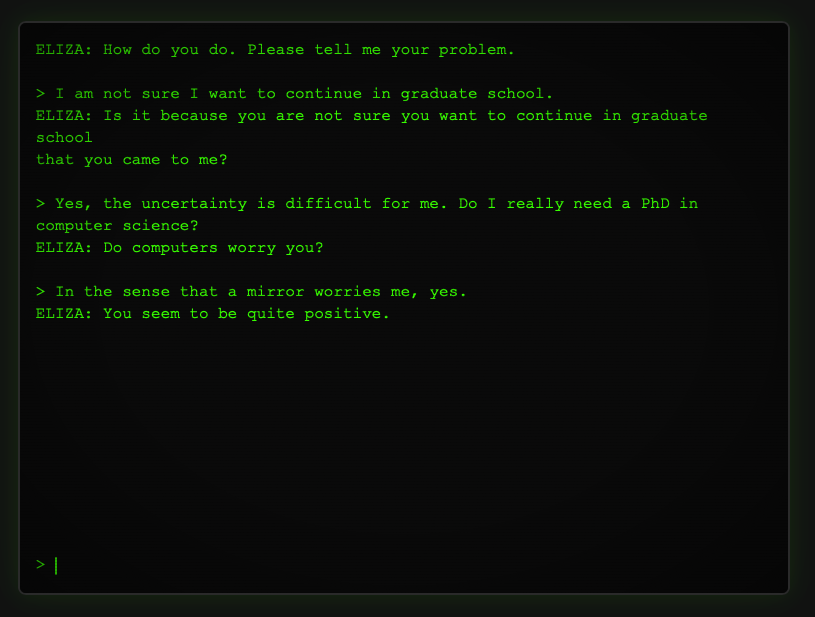

Know your history.
It is worth knowing a little bit about what you are being sold, what is (as of Apr 2026) one fifth of the United States economy.1 And the first thing to know is a little bit of context. I will be brutally brief, but I will include sources.2
In 1968 a professor of computer science3 wrote a few lines of code to demonstrate how easy it was to ape our language. In the professor’s own office his secretary closed the door so that she could have more privacy while she confided in those four hundred lines of programming code. (Keep in mind that there is more computing power in the adapter for your laptop than there was in those early computers.4) In the 1970s, as personal computers started showing up in schools, someone distributed a version of that same software written in BASIC. Eliza, the program, so convincingly imitated an interested therapist that people crowded around the screens, to see what she would say next.

You should try it, just to see what was happening in 1970. I’ve tossed it up on a tiny website.5 There are links to how it works and the history of the project. You can see (and download) the source code. It was not, is not, intelligent or conscious.
Let’s skip ahead twenty years. We’re at Bell Labs, in the Terminal Room with rob pike, Brian Kernighan, Ken Thompson, and Bruce Ellis. One of them (probably all of them) had read Andrey Markov’s research on language and the proposition of Markov Chains.6 With a little bit of fiddling they can feed in some source material7 and generate the tables that Markov thought were interesting: the frequency of one word occurring after another. Or, to use a very local example, how often does the word ‘another’ follow the word ‘after?’ 8
Look at all the words that start a sentence. Roll a die and pick one (‘Look’) and grab all the words which might follow it. They happen in percentages.9 Roll the die again and pick one. If you do this continually you will make a chain of words. Since they were just playing around in the Terminal Room, they edited by hand, adding in punctuation and capitalization as needed to make the chains readable.10 And they created a persona, Mark V Shaney, who posted on alt.singles.net, an early-Internet discussion group.11 Mark wrote messages like, “As I've commented before, really relating to someone involves standing next to impossible.”12
Shaney’s little engine was trained on the text of alt.singles itself. He was feeding back into the community a gruel of their own meaty text ground up and served back like Scrapple.13 As far as I know, most people were fooled.14
§
That was forty-two years ago. By Moore’s law15 computers are now exponentially more powerful.16 They have grown so vast in power and storage that it is no longer possible for our minds to grasp the numbers that represent their mathematical abilities. Billions of transistors work together to deliver a response from an LLM into your browser. The large language model I recently downloaded to my laptop was trained with three billion weights. In “The Blind Watchmaker” Richard Dawkins writes about how faith is often an argument made from personal incredulity: “I don’t believe there could be so many species without a mind designing them.” “If the universe had a beginning, what was there before that? It’s impossible to imagine, it can’t be.” So now we are in the age, another age really, of magic.
Any sufficiently advanced technology is indistinguishable from magic.
Arthur C Clarke17
But you deserve a peek behind the curtain, because you are likely one of the people whose lives will be disrupted by the magic.
Even though we have jumped up the power of the machine, even though we have had thousands of people work on the code, on the math, the theories that underpin the LLM, it is, deep down, no different than Mark V Shaney. We have fed it (counter to the laws of any nation with copyright laws) as much text as it can gobble. We have trained the output so that real people react to it positively.18 But that’s it. The LLM is an engine just like the one inside Mark V Shaney, that does the same thing. ‘Just like’ in the sense that the Saturn V rocket engine is the just like the Model T combustion engine. Fuel in, force out. Nothing more complex. The LLM is just predicting the next token in a sequence. It is never more complex than that, as difficult as that is to believe.
§
Let us step away from computers, ironically the landscape where the LLM is most useful, and talk about the Beatles. We could talk about how All You Need is Love is the same tune as Mozart’s Piano Concerto No. 25. Instead, we will just look at one Beatle, George Harrison. George wrote a song, My Sweet Lord, which to some ears sounded a lot like He’s So Fine. A song that George certainly heard, or at the very least had heard all of the songs that the composer of He’s So Fine had heard. They were strolling the same ground, enjoying the same views, and wrote a similar song.
Because George was more famous than all but two or three other people on the planet, the publishing rights of any of his radio tunes was a goldmine. So someone clever (but certainly not ethical) bought the rights to the earlier song and sued George. And the world got a little primer in how copyright law works with songs.19
In a similar vein, Bob Dylan was sued because Don’t Think Twice It’s Alright sounded a lot like a folk song Who’ll Buy You Ribbons When I’m Gone. Which was lifted directly from Who’ll Buy Your Chickens When I’m Gone, a folk song in the public domain.
You can trace these same sort of cases in the literary world and through other creative works. And there are tomes written about copyright law (which is a fairly recent invention for humanity) and what it means for our culture. Mickey Mouse is only valuable because we collectively decided he was enjoyable and worth consuming. Somehow, over nearly a hundred years, we have contributed to what Mickey Mouse is, and isn’t, and that makes him an asset. The public has no ownership, but it still carries Mickey on their shoulders like a hero, then paying for the privilege. We have decided, and written into law, that ownership of that asset cannot be forever, and after nearly a century he is ‘owned’ by everyone.
Most of our art is a trawling through existing art and a regurgitation of the more interesting bits the artist notices, filtered through their experience (including their education) and current state. This is, definitively, the folk song (and folk art) tradition. Anyone can sing Frankie and Johnny, change the words, mangle the tune, and call it theirs. Not even Frankie Baker has the rights to Frankie and Johnny,20 and she's the one who pulled the trigger.
—-
What does this have to do with the price of tea in China?
The folk tradition is how the greedy people are training the llamas. They claim that because the machine doesn’t keep an exact copy of the work, it is not a violation of copyright.
And the folk tradition is an illustration of what the llama is capable of: only interpolation, only an averaging of what it has been given, only yet another cover song. It is one reason that it is so convincing when it produces something ‘creative:’ it is a sort of creativity that we are used to seeing in our culture.
And it is vital to remember that the vast, vast amount of data fed to the llamas is rife with errors. The llama, ‘learning’ from all of that, will happily repeat the errors just as it repeats the facts. It doesn’t know the difference.